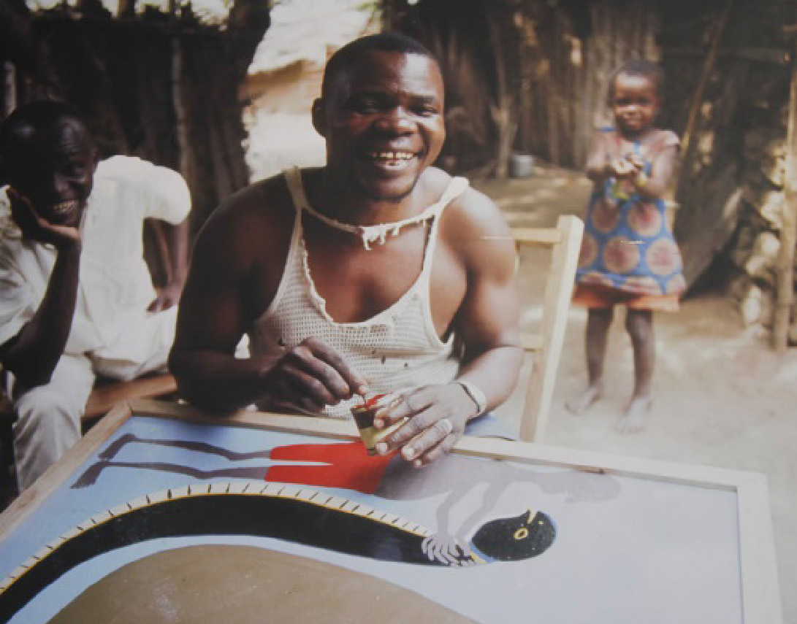

Tingatinga painting movement
The Tingatinga painting movement was originally introduced by a Tanzanian Edward Said Tingatinga, who was born in 1932 in Mindu village, Tunduru district, Ruvuma region. This type of art is named by the founder’s name. His earliest inspiration for painting started at Mindu village where mural painting in folk art tradition was part of his people’s cultural heritage. The artists from Zaire (now DRC) who used to sell their artworks to foreigners in the curio shops of Dar es Salaam also inspired Tingatinga. It was such inspiration that drove him into painting. It was in Dar es Salaam in 1968 that Tingatinga started to paint after finding out that painting could generate some income.
Tingatinga met his tragic death through mistaken identity. His taxi driver disobeyed a police order to stop, something which irritated the police patrol who started a car chase that resulted in a shootout that killed Edward Said Tingatinga.
Although Tingatinga died in May 1972, his followers continued to create several styles whose stylistic evolution continued to spread in other countries such as Kenya, Norway, Sweden, Finland, and Denmark. Figure 5.2. shows Edward Said Tingatinga at work.

In 1971 The National Arts Council showcased Tingatinga’s works on a stand at the International Trade Fair, Sabasaba grounds in Dar es Salaam, where his paintings